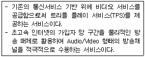

네트워크관리사-2급 (2012-07-22 기출문제)
1과목: TCP/IP
1. IPv6 프로토콜의 구조는?
- 32비트
- 64비트
- 128비트
- 256비트
(정답률: 95%)

2. 인터넷을 경유하여 로컬 네트워크에 접근할 때, 보안의 강화를 유지하면서 가상사설망(VPN)을 지원해주는 프로토콜은?
- PPP
- PPTP
- HDLC
- CSLIP
(정답률: 62%)
3. IP Address를 네트워크 인터페이스 카드의 하드웨어 주소로 변환하는 프로토콜은?
- ICMP
- IGMP
- ARP
- RARP
(정답률: 90%)
4. SSH는 포트포워딩(Port Forwarding) 기능을 제공한다. 이 기능을 사용함으로써 얻을 수 있는 장점은?
- 통신비용의 절감
- 암호화를 지원하지 않는 프로그램의 안전한 사용
- 선택적인 데이터 압축으로 전송 속도 향상
- 사용자의 자동 인증
(정답률: 82%)
5. TCP 세션의 성립에 대한 설명으로 옳지 않은 것은?
- 세션 성립은 TCP Three-Way Handshake 응답 확인 방식이라 한다.
- 실제 순서번호는 송신 호스트에서 임의로 선택된다.
- 세션 성립을 원하는 컴퓨터가 ACK 플래그를 '0'으로 설정하는 TCP 패킷을 보낸다.
- 송신 호스트는 데이터가 성공적으로 수신된 것을 확인하기까지는 복사본을 유지한다.
(정답률: 68%)
6. 프로토콜과 기본 포트 번호로 사용되는 잘 알려진(Well Known) 포트 번호가 올바르게 짝지어진 것은?
- Telnet - 21
- POP2 - 27
- POP3 - 25
- HTTP - 80
(정답률: 86%)
7. Telnet을 이용하여 상대방 컴퓨터에 접속을 시도하려고 한다. 상대방 컴퓨터에게 일정한 데이터를 보내 상대방 컴퓨터의 정상 동작 여부를 확인하고 싶을 때 사용하는 명령어는?
- ping
- nslookup
- netstat
- finger
(정답률: 85%)
8. IP Address를 관리하기 위한 Subnetting을 하는 이유로 옳지 않은 것은?
- IP Address를 효율적으로 사용할 수 있다.
- Network ID와 Host ID를 구분할 수 있다.
- 불필요한 Broadcasting Message를 제한할 수 있다.
- Host ID를 사용하지 않아도 된다.
(정답률: 83%)
9. 패킷 전송의 최적 경로를 위해 다른 라우터들로부터 정보를 수집하는데, 최대 홉이 15를 넘지 못하는 프로토콜은?
- RIP
- OSPF
- IGP
- EGP
(정답률: 90%)
10. IGMP에 대한 설명 중 올바른 것은?
- 라우터가 주어진 멀티캐스트 그룹에 속한 호스트 존재 여부를 판단하기 위해 사용되는 인터넷 프로토콜
- IP Address를 물리적인 랜카드 주소로 변환시키는 주소 결정 프로토콜
- 신뢰성이 있는 연결형 프로토콜
- 신뢰성이 없는 비연결형 프로토콜
(정답률: 81%)
11. TCP/IP 프로토콜 계층 중 TCP와 UDP를 사용하여 도착하고자 하는 시스템까지 데이터를 전송하는 역할을 하는 계층은?
- 전송 계층
- 인터넷 계층
- 응용 계층
- 네트워크 접속 계층
(정답률: 91%)
12. xxx.yyy.zzz 서버에 접속하기 위해 'telnet xxx.yyy.zzz:5555'라고 명령을 입력했다. 여기서 '5555'의 의미는?
- 포트 번호
- 사용자 번호
- 이더넷 주소
- IP Address
(정답률: 91%)
13. 네트워크의 고장 여부를 체크하기 위해 사용하는 ICMP(Internet Control Message Protocol) 질의 메시지는?
- 에코 요청과 응답
- 타임스탬프 요청과 응답
- 주소 마스크 요청과 응답
- 라우터 요청과 광고
(정답률: 80%)
14. B Class에 대한 설명 중 옳지 않은 것은?
- Network ID는 128.0 ~ 191.255 이고, Host ID는 0.1 ~ 255.254 가 된다.
- IP Address가 150.32.25.3인 경우, Network ID는 150.32 Host ID는 25.3 이 된다.
- Multicast 등과 같이 특수한 기능이나 실험을 위해 사용된다.
- Host ID가 255.255일 때는 메시지가 네트워크 전체로 브로드 캐스트 된다.
(정답률: 73%)
15. Class가 다른 IP Address는?
- 223.235.47.35
- 224.128.1⑤.4
- 225.114.58.5
- 226.204.26.34
(정답률: 83%)
16. Internet Protocol에 대한 설명으로 옳지 않은 것은?
- TCP에 의해 패킷으로 변환된 데이터를 Datalink Layer에 전달하여 다른 호스트로 전송하게 한다.
- 필요시 패킷을 절단하여 전송하기도 한다.
- 비 연결 프로토콜이다.
- OSI 7 Layer의 Datalink Layer에 대응한다.
(정답률: 65%)
17. SNMP에 대한 설명으로 옳지 않은 것은?
- TCP를 이용하여 신뢰성 있는 통신을 한다.
- 네트워크 관리를 위한 표준 프로토콜이다.
- 응용 계층 프로토콜이다.
- RFC 1157에 규정 되어 있다.
(정답률: 65%)
2과목: 네트워크 일반
18. AP(Access Point) 중심으로 여러 대의 노드가 연결되어 하나의 무선 네트워크 단위로 형성하는 무선 LAN 방식은?
- Infrastructure
- Ad-Hoc
- Smart
- PCMCIA
(정답률: 48%)
19. PCM 방식에서 아날로그 신호의 디지털 신호 생성 과정으로 올바른 것은?
- 음성 - 표본화 - 양자화 - 부호화 - 전송로
- 음성 - 양자화 - 표본화 - 부호화 - 전송로
- 음성 - 표본화 - 부호화 - 양자화 - 전송로
- 음성 - 양자화 - 부호화 - 표본화 - 전송로
(정답률: 86%)
20. OSI 7 Layer 중 세션계층의 역할로 옳지 않은 것은?
- 대화 제어
- 에러 제어
- 연결 설정 종료
- 동기화
(정답률: 75%)
21. 랜의 연결 방식으로 모든 노드들이 자신의 전송 시간 동안 케이블을 감시하는 것으로 만약 자료 전송 중 다른 노드에서 신호를 보내어 충돌이 발견되면 이를 감지하고 재전송하는 방식은?
- CSMA/CA
- CSMA/CD
- Token Ring
- Fiber Optic Cable
(정답률: 78%)
22. IEEE 802 시리즈에 관한 내용이다. 연결이 올바른 것은?
- 802.2 - LLC
- 802.7 - MAN
- 802.4 - CSMA/CD
- 802.6 - Token Ring
(정답률: 69%)
23. 다음에서 설명하는 서비스는?

- IPTV(Internet Protocol TV)
- Bluetooth
- IMT-2000
- WAP(Wireless Application Protocol)
(정답률: 87%)
24. 데이터 통신망에서 정보를 교환하는 방식으로 옳지 않은 것은?
- 회선 교환(Circuit Switching)
- 메시지 교환(Message Switching)
- 패킷 교환(Packet Switching)
- 망 교환(Network Switching)
(정답률: 69%)
25. Digital 신호를 받아 잡음을 없앤 후 신호를 증폭시켜 멀리까지 전송 되도록 하는 장치는?
- Repeater
- Amplifier
- Hub
- Multiplexing
(정답률: 86%)
26. 사용자가 요구하는 만큼의 대역폭(Bandwidth)을 필요한 순간만 쓸 수 있는 연결서비스는?
- X.25
- ATM
- FRAME RELAY
- ISDN
(정답률: 57%)
27. Bus Topology의 설명 중 올바른 것은?
- 문제가 발생한 위치를 파악하기가 쉽다.
- 각 스테이션이 중앙스위치에 연결된다.
- 터미네이터(Terminator)가 시그널의 반사를 방지하기 위해 사용된다.
- Token Passing 기법을 사용한다.
(정답률: 78%)
3과목: NOS
28. Windows 2003 Server의 IIS(Internet Information Server)에서 설정 가능한 서비스로 옳지 않은 것은?
- TELNET
- FTP
- NNTP
- WWW
(정답률: 69%)
29. Linux 관리자인 당신은 Sendmail을 설정하여 회사 메일서버로 활용하려고 한다. 당신이 수행해야 할 부분과 내용으로 옳지 않은 것은?
- /etc/mail/access : Relay 설정
- /etc/mail/relay-domains : Realy 설정
- /etc/sendmail.cf : 메일크기 제한
- /etc/inetd.conf : 별명부여 설정
(정답률: 47%)
30. Windows 2003 Server에서 클라이언트 컴퓨터에 자동으로 IP Address를 할당해주는 서버는?
- DHCP
- WINS
- DNS
- IIS
(정답률: 83%)
31. Linux에서 네트워크 인터페이스 카드 설정 및 정보를 확인할 수 있는 명령어는?
- ifconfig
- traceroute
- sndconfig
- mount
(정답률: 85%)
32. Windows 2003 Server가 기본적으로 지원하는 File System이 아닌 것은?
- EXT2
- NTFS
- FAT
- FAT32
(정답률: 74%)
33. Linux 시스템의 기본 디렉터리에 대한 설명으로 옳지 않은 것은?
- /etc : 시스템 설정과 관련된 파일이 저장된다.
- /dev : 시스템의 각종 디바이스에 대한 드라이버들이 저장된다.
- /var : 시스템에 대한 로그와 큐가 쌓인다.
- /usr : 각 유저의 홈 디렉터리가 위치한다.
(정답률: 68%)
34. Linux 시스템에서 사용되고 있는 메모리양과 사용 가능한 메모리 양, 공유 메모리와 가상 메모리에 대한 정보를 볼 수 있는 명령어는?
- mem
- free
- du
- cat
(정답률: 74%)
35. Linux의 'vi' 에디터 명령 모드 작업에 대한 설명 중 올바른 것은?
- 저장하는 방법은 ':q' 라고 하면 된다.
- 저장하지 않고 끝내는 방법은 ':wq!' 이다.
- 문서에 행 번호 붙이기는 ':set nu' 라고 하면 된다.
- 한 줄 삭제 명령은 'dw' 이다.
(정답률: 63%)
36. Windows 2003 Server에서 C 드라이브의 파티션을 FAT에서 NTFS로 변환하는 명령으로 올바른 것은?
- recover C:/FS:FAT
- recover C:/NTFS:FAT
- convert C:/FAT:NTFS
- convert C:/FS:NTFS
(정답률: 50%)
37. Windows 2003 Server 운영 중 옳지 않은 것은?
- Windows 2003 Server는 DHCP 클라이언트나 DHCP 서버용으로 구성할 수 있다.
- 웹 페이지를 호스트하거나 FTP를 통해서 파일을 엑세스할 수 있는 시스템을 구축하기 위해서는 IIS를 이용하면 된다.
- Active Directory는 큰 네트워크에 있어서 NT Server보다 더 효율적으로 잘 관리할 수 있게 해준다.
- TCP/IP를 사용하는 것이 매우 편리하기는 하지만 라우트가 불가능하기 때문에 보완책이 필요하다.
(정답률: 68%)
38. Windows 2003 Server의 관리도구 중 로컬 보안 설정을 통해 설정 가능한 보안정책으로 옳지 않은 것은?
- 계정의 최소 암호 길이의 설정
- 계정의 최소 암호 기간의 설정
- 잘못된 암호를 입력하여 로그온 실패 시 계정이 잠기는 기간 설정
- User 및 Group들의 로컬 파일 검색 허용 설정
(정답률: 66%)
39. Linux에서 서버를 종료하기 위해 'shutdown - h +30'을 입력하였다. 그런데 갑자기 어떤 작업을 추가로 하게 되어 앞서 내렸던 명령을 취소하려고 한다. 이때 필요한 명령어는?
- shutdown -c
- shutdown -v
- shutdown -x
- shutdown -z
(정답률: 69%)
40. Windows 2003 Server에서 시스템 인터페이스 정보를 출력하면서 송수신 패킷 수 및 오류 수, 충돌 횟수, 현재 출력 큐에 대기 중인 패킷 등에 관한 정보를 제공하는 것은?
- arp
- netstat
- filter
- icmp
(정답률: 72%)
41. Windows 2003 Server에서 관리 작업을 수행하거나 네트워크 리소스에 임시로 엑세스할 수 있도록 만들어진 기본 제공 사용자 계정은?
- Administrator
- User
- Active Directory
- Everyone
(정답률: 78%)
42. Linux에서 네트워크 환경설정 파일을 수정한 경우에는 네트워크를 재 시작해야 한다. 컴퓨터를 재부팅하지 않고 네트워크 부분만을 재시작하는 명령어로 올바른 것은?
- /etc/init.d/network restart
- /etc/init.d/network start
- /etc/init.d/network stop
- /etc/init.d/network again
(정답률: 86%)
43. 아파치 서버의 설정파일인 'httpd.conf'의 항목에 대한 설명 중 잘못된 것은?
- KeepAlive On : HTTP에 대한 접속을 끊지 않고 유지한다.
- StartServers 5 : 웹서버가 시작할 때 다섯 번째 서버를 실행 시킨다.
- MaxClients 150 : 한 번에 접근 가능한 클라이언트의 개수는 150개 이다.
- Port 80 : 웹서버의 접속 포트 번호는 80번이다.
(정답률: 79%)
44. Windows 2003 Server에서 사용하는 사용자 계정의 설명으로 옳지 않은 것은?
- Administrator 계정은 Windows 2003 Server 설치 시 만들어진다.
- 일반적으로 사용자를 만들면 그 사용자는 Backup Operations 그룹의 구성원이 된다.
- 일반 사용자 계정으로 로그온 하면 컴퓨터와 도메인에 대한 제한적인 권한만을 가진다.
- Administrator 계정으로 로그온 하면 컴퓨터와 도메인에 대한 모든 관리를 할 수 있다.
(정답률: 70%)
45. Windows 2003 Server의 Active Directory에 대한 설명으로 옳지 않은 것은?
- 네트워크상의 개체에 대한 정보를 저장하며 관리자와 사용자가 이 정보를 쉽게 찾아 사용할 수 있도록 한다.
- 인터넷을 통한 로그온 인증도 가능하다.
- 공유 파일의 전송 시 인터넷 표준인 HTTP 프로토콜을 이용한다.
- DNS 기반의 네임 스페이스를 이용한다.
(정답률: 59%)
4과목: 네트워크 운용기기
46. 광케이블에 대한 설명으로 옳지 않은 것은?
- 멀티 모드형과 싱글 모드형이 있다.
- 동축케이블과 마찬가지로 단선이 되었을 경우, 별도의 장비 없이 선을 연결하여 사용할 수 있다.
- 광섬유는 코어(Core)와 클래드(Clad)로 구성된다.
- 보안 및 잡음 등에 강한 것이 특징이다.
(정답률: 79%)
47. OSI 7 Layer 중 네트워크 계층에서 동작하는 네트워크 연결 장치는?
- Repeater
- Router
- Bridge
- NIC
(정답률: 84%)
48. Gateway에 대한 설명 중 올바른 것은?
- OSI 7 Layer 중 네트워크 계층에서 동작한다.
- 상이한 네트워크 프로토콜, 데이터 포맷 등을 가지고 있는 두 개의 시스템 사이를 중개해 주는 역할을 하는 장치이다.
- 서로 구조가 같은 두 개의 통신망을 연결하는데 쓰이는 장치 또는 시스템이다.
- 2계층 스위치가 이에 속한다.
(정답률: 69%)
49. 네트워크 장비 중 Bridge가 Packet의 목적지를 결정하는 방법은?
- MAC Address를 검사한다.
- 목적지 IP Address를 검사한다.
- 출발지 IP Address를 검사한다.
- NIC Address를 검사한다.
(정답률: 54%)
50. 네트워크 인터페이스 카드(NIC)에 대한 설명으로 옳지 않은 것은?
- OSI 7 Layer 중 4 계층 장비이다.
- 케이블을 통해 데이터 전송을 하기 위한 장치이다.
- 병렬 데이터를 받아 직렬로 전송한다.
- 고유한 네트워크 어드레스인 MAC Address가 있다.
(정답률: 71%)